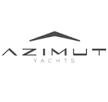

Mechanical engineer · Control systems and automation
I develop models and controllers for electric vehicles, from MATLAB/Simulink simulation to testing on a real vehicle, with an eye on artificial intelligence and on the optimisation of production processes.
Where I applied what I studied.

Work in the Continuous Improvement office, focused on monitoring the production cycle through the MES. Analysis of shop-floor data to compute production KPIs, identify inefficiencies and optimise processes.
Development of an AI-based EdTech application. Design and implementation of an algorithm based on Large Language Models for the automated, personalised generation of teaching presentations.
University projects, theses and team work. Click on a project for the details.
An NMPC distilled into an LSTM network that runs on dSPACE and retrains online.
ACC with speed/distance switching and LQR path tracking with curvature feedforward.
CarSim–Simulink co-simulation: hierarchical control of speed, yaw rate and slip with two rear motors.
Full vehicle with roll and differential, bicycle model, Pacejka tyre, braking with EBD and ride comfort.
Current, torque, speed and position control with a three-phase inverter, from the datasheet to the simulation.
Six lab sessions on pneumatic, electric and hydraulic test benches, with Simulink models validated against the measurements.
PLC in Ladder, relay logic, pneumatic circuits and simulation in Amesim.
Six MATLAB/Simulink models and four bench tests: cams, slider-crank, indexing mechanisms.
Shell mesh, carbon and glass laminates, CFD loads and contact between the vertical and the foil.
Data acquisition with a Keithley 3706 for three experiments on convection and pressure losses.
Helical gears, shafts, bearings and housing, with static and fatigue checks to ISO standards.
Thermal loads, AHU, refrigeration cycles, distribution networks, energy and exergy analysis.
My path in short.
Politecnico di Torino
Continuous improvement, MES and production KPIs
LLM-based algorithms for EdTech
Structures department, FEM analysis
University of Rome Tor Vergata
The tools I use most.
I am available for new opportunities in Turin or willing to relocate.